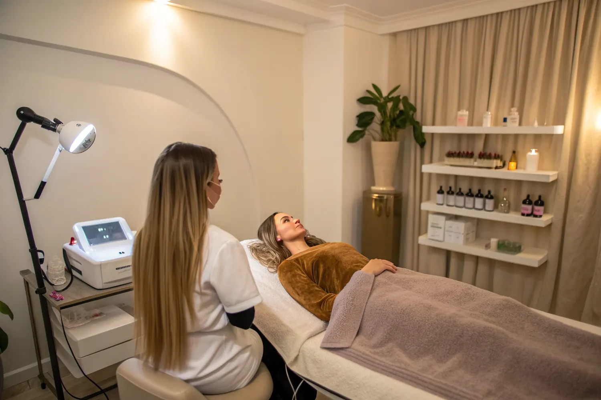

Laser-Haarentfernung in Bonn: wir sagen dir vorher, wie viele Sitzungen es werden.
ICE-Diodenlaser und Alexandrit in einem Handstück, vier Wellenlängen von 755 bis 1064 nm, Kühlung auf bis zu −26 °C während des Impulses. Für Frauen und Männer, für die Hauttypen I bis VI — und mit einem Preis je Areal statt einem Paket, das du vorab kaufen musst.
- ab 15 € je Areal
- Hauttyp I–VI
- Testimpuls möglich


Warum ein Gerät mit 755, 808, 940 und 1064 nm den Unterschied macht.
Ein Laser entfernt Haare, indem das Melanin im Haarschaft die Lichtenergie aufnimmt und in Wärme umwandelt. Diese Wärme erreicht die Wurzel und schaltet sie ab. Das Problem: Melanin sitzt nicht nur im Haar, sondern auch in der Haut. Bei dunklerer Haut konkurriert die Oberhaut mit dem Haar um die Energie — und genau da entstehen Verbrennungen, wenn ein Studio nur eine Wellenlänge hat und trotzdem behandelt.
Deshalb arbeiten wir mit vier. 755 nm (Alexandrit) wird am stärksten vom Melanin absorbiert und greift feines, helleres Haar. 808 und 940 nm (Diode) sind der Allrounder für große Areale wie Beine oder Rücken. 1064 nm dringt am tiefsten ein und umgeht das Melanin der Oberhaut weitgehend — das ist die Wellenlänge, die dunklere Hauttypen sicher behandelbar macht.
Welche davon bei dir läuft, entscheidet nicht das Gerät und auch nicht der Kalender, sondern dein Hauttyp. Der Smart Scanner liest ihn aus, ein Testimpuls bestätigt die Einstellung, und bei jeder Folgesitzung wird neu gemessen — Haut verändert sich mit der Jahreszeit.
- Kühlung
- −26 °C Kontaktkühlung während des Impulses, nicht erst danach
- Hauttypen
- I – VI Vollständige Fitzpatrick-Skala
- Rhythmus
- 4 – 8 Wochen zwischen zwei Sitzungen, je nach Areal
Von der ersten Frage bis zur letzten Sitzung — und was dazwischen passiert.
Vorgespräch
Wir schauen uns Haut und Haar an und klären, was dagegenspricht: frische Sonne, bestimmte Medikamente, Hautreizungen, Tattoos im Areal, Schwangerschaft. Danach steht die Einschätzung — inklusive der Sitzungszahl, die für dein Areal realistisch ist.
Testimpuls
Auf Wunsch setzen wir vor der ersten vollen Behandlung einen einzelnen Impuls. Du weißt dann, wie es sich anfühlt, und wir sehen, wie deine Haut reagiert. Das kostet zehn Minuten und nimmt den größten Teil der Unsicherheit raus.
Behandlung
Reinigung, Schutzbrille, Gelfilm für besseren Kontakt. Das Handstück läuft in Bahnen über das Areal, die Kühlung läuft mit. Achseln dauern wenige Minuten, Beine deutlich länger. Du sagst jederzeit Stopp.
Nachsorge
Beruhigende Pflege, Sonnenschutz, 48 Stunden ohne Sauna, Solarium und intensiven Sport. Ein bis drei Wochen später schiebt die Haut die behandelten Haare ab — das ist der Moment, in dem viele denken, es hätte nicht funktioniert. Es ist das Gegenteil.
Was welches Areal kostet. Je Sitzung.
Keine Pakete, keine Mindestabnahme, keine Vertragslaufzeit. Du zahlst die Sitzung, die du hattest. Wenn ein Areal weniger Termine braucht als geplant, sagen wir das — und du sparst.
Damen
- Oberlippe20 €
- Kinn15 €
- Koteletten15 €
- Wangen25 €
- Hals20 €
- Gesicht komplett50 €
- Achseln40 €
- Arme45 €
- Intim & Bikini60 €
- Beine95 €
- Ganzkörper Alexandrit180 €
- Ganzkörper Folgebehandlung165 €
Herren
- Jochbein25 €
- Hals30 €
- Nacken20 €
- Achseln30 €
- Oberarme35 €
- Bauch40 €
- Rücken50 €
- Rücken + Achseln125 €
- Brust100 €
- Beine80 €
- Ganzkörper245 €
- Ganzkörper Folgebehandlung125 €
Was das in Summe heißt. Rechne bei den meisten Arealen mit 6 bis 10 Sitzungen. Achseln liegen damit über die gesamte Behandlungsstrecke bei etwa 240 bis 400 €, Intim und Bikini bei 360 bis 600 €, Beine bei 570 bis 950 €. Das sagen wir lieber vorher, als dass du es dir selbst zusammenrechnest.
Preise je Sitzung, Stand August 2026. Die vollständige Preisliste mit Gesichts- und Körperbehandlungen findest du auf einer eigenen Seite.
Sechs Regeln, die über das Ergebnis entscheiden.
Die Technik ist die eine Hälfte. Die andere bist du — und sie kostet dich nichts außer Aufmerksamkeit in den Tagen um den Termin herum.
In den zwei bis vier Wochen davor
- Nicht zupfen, wachsen, epilieren oder sugaren. Der Laser braucht die Haarwurzel im Follikel. Wer sie vorher herausreißt, bezahlt eine Sitzung, die ins Leere geht.
- Rasieren ist erlaubt — und am Tag der Behandlung sogar erwünscht. Das Haar über der Haut würde sonst nur Energie verbrennen.
- Keine Sonne, kein Solarium, kein Selbstbräuner. Frisch gebräunte Haut enthält mehr Melanin, das die Energie abfängt. Wir müssten die Leistung reduzieren — oder den Termin verschieben.
In den 48 Stunden danach
- Keine Sauna, kein heißes Bad, kein intensiver Sport. Wärme und Reibung reizen die bereits erwärmte Haut zusätzlich.
- Sonnenschutz auf dem behandelten Areal, auch im Herbst und auch unter Kleidung, wenn Sonne drankommt.
- Milde Pflege statt Wirkstoff-Offensive. Keine Säuren, keine Retinoide, keine Peelings auf dem Areal.

Ergebnis nach abgeschlossener Behandlungsstrecke — individuell verschieden
Drei Dinge, die dir seriöse Studios sagen — und unseriöse nicht.
„Dauerhafte Haarentfernung“ ist der Begriff, unter dem alle suchen. Fachlich korrekt ist „dauerhafte Haarreduktion“ — und der Unterschied ist keine Wortklauberei.
- Nicht jedes Haar verschwindet für immer. Realistisch ist eine dauerhafte Reduktion um 80 bis 90 Prozent, der Rest wächst feiner und heller nach. Viele Kundinnen kommen ein- bis zweimal im Jahr zu einer Auffrischung — das ist normal und kein Zeichen, dass etwas schiefgelaufen ist.
- Weiße, graue und sehr helle blonde Haare sprechen kaum an. Ohne Melanin gibt es nichts, was die Energie aufnimmt. Wer dir für graue Haare eine Zehnerkarte verkauft, verkauft dir Luft.
- Hormonell bedingter Haarwuchs kann zurückkommen. Bei PCOS oder in Umstellungsphasen kann der Körper Follikel neu aktivieren. Der Laser wirkt trotzdem, aber der Plan sieht dann anders aus — mit längerer Begleitung statt einer abgeschlossenen Strecke.
Alles, was vor der ersten Sitzung gefragt wird.
Deine Frage ist nicht dabei? Schreib sie per WhatsApp. Antworten kosten nichts und verpflichten zu nichts.
Wie viele Sitzungen brauche ich?
Realistisch sind 6 bis 10 Sitzungen im Abstand von 4 bis 8 Wochen. Der Laser erreicht nur Haare in der aktiven Wachstumsphase, der Anagenphase — und die ist nie bei allen Haaren gleichzeitig. Deshalb braucht es mehrere Durchgänge, bis jeder Follikel einmal „erwischt“ wurde.
Achseln und Intim kommen oft mit weniger Terminen aus als Beine oder ein dichter Männerrücken. Die Einschätzung für dein Areal bekommst du beim ersten Termin — vorher wäre sie geraten.
Was kostet die Laser-Haarentfernung insgesamt?
Du zahlst je Areal und Sitzung. Achseln 40 €, Intim und Bikini 60 €, Beine 95 €, Oberlippe 20 €. Bei Herren: Rücken 50 €, Brust 100 €, Ganzkörper 245 €.
Über 6 bis 10 Sitzungen gerechnet liegen Achseln damit bei etwa 240 bis 400 €, Beine bei 570 bis 950 €. Es gibt keine Pakete, die du vorab kaufen musst — wenn ein Areal früher fertig ist, hörst du früher auf.
Ist das bei dunkler Haut sicher?
Ja, bis Hauttyp VI nach Fitzpatrick. Möglich macht das die Wellenlänge 1064 nm: Sie dringt tiefer ein und wird vom Melanin der Oberhaut weniger stark absorbiert, sodass die Energie am Follikel ankommt statt in der Haut.
Der Smart Scanner erkennt den Hauttyp, ein Testimpuls sichert die Einstellung ab. Wichtig bleibt: keine frische Bräune, kein Selbstbräuner. Beides erhöht das Melanin in der Oberhaut und damit das Risiko.
Diodenlaser oder Alexandrit — was ist besser?
Keins von beidem ist grundsätzlich besser, sie sind für Unterschiedliches gemacht. Der Alexandritlaser (755 nm) wird sehr stark vom Melanin absorbiert und greift feines, helleres Haar auf heller Haut. Der Diodenlaser (808 und 940 nm) ist der Allrounder für große Areale, und 1064 nm geht tief genug für dunklere Hauttypen.
Bei uns sind beide Technologien in einem Handstück kombiniert. Das heißt: Wir können innerhalb einer Sitzung wechseln, statt dich an das Gerät anzupassen, das gerade dasteht.
Tut es weh?
Die meisten beschreiben es als kurzes, kühles Klopfen oder ein leichtes Zwicken wie ein Gummiband. Die Haut wird während jedes Impulses auf bis zu −26 °C heruntergekühlt, der Kältereiz überlagert den Wärmereiz.
Empfindlich sind vor allem Oberlippe, Intimbereich und knochennahe Stellen wie Schienbein. Dort gehen wir langsamer vor, mit Pausen. Wenn dir etwas zu viel ist, sagst du Stopp — und dann ist Stopp.
Was muss ich vorher beachten?
Zwei bis vier Wochen vorher nicht zupfen, wachsen, epilieren oder sugaren — der Laser braucht die Wurzel. Rasieren ist ausdrücklich erlaubt und am Behandlungstag sogar erwünscht.
Keine Sonne und kein Solarium in den zwei Wochen davor, kein Selbstbräuner. Am Termin selbst: Haut sauber, kein Make-up, kein Deo, keine Öle oder Cremes auf dem Areal.
Funktioniert es bei blonden, roten oder grauen Haaren?
Nur eingeschränkt. Der Laser arbeitet über das Melanin im Haar. Weiße, graue und sehr helle blonde Haare enthalten kaum welches und sprechen deshalb kaum an. Rotes und dunkelblondes Haar reagiert unterschiedlich stark.
Das sagen wir vor der ersten Sitzung und nicht nach der dritten. Im Zweifel klärt ein Testimpuls, ob sich der Aufwand für dich lohnt.
Kann ich während Schwangerschaft oder Stillzeit lasern?
Wir behandeln in der Schwangerschaft nicht. Es gibt keine Hinweise auf eine Schädigung des Kindes, aber es gibt auch keine Studienlage, die Sicherheit belegt — und der Hormonhaushalt verändert das Haarwachstum ohnehin so stark, dass das Ergebnis nicht planbar wäre.
In der Stillzeit ist eine Behandlung außerhalb der Brust grundsätzlich möglich. Sprich es beim Vorgespräch an, dann klären wir es gemeinsam.
Was Kundinnen oft kombinieren.
 ab 98 €
ab 98 €
Gesichtsbehandlungen
Aqua Facial, Microneedling, Radiofrequenz und Plasma Pen — mit Hautanalyse davor.
Ansehen ab 35 €
ab 35 €
Körperbehandlungen
G5 Bodyforming und kosmetische Lymphdrainage — gut nach einer Laser-Strecke.
Ansehen auf Anfrage
auf Anfrage
Wimpernverlängerung
Jede Naturwimper einzeln isoliert, Länge nach Tragfähigkeit statt nach Wunschbild.
AnsehenErst der Testimpuls. Dann entscheidest du.
Du musst nicht direkt eine Strecke buchen. Komm zum Vorgespräch, lass uns Haut und Haar anschauen, spür einen einzelnen Impuls — und entscheide danach.
- AdresseAuerberger Allee 1
53117 Bonn-Auerberg - Telefon0174 5603565
- ÖffnungszeitenMontag bis Samstag
11:00 – 18:00 Uhr